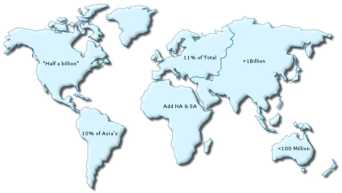

| Using Special Punctuation |
|
You can directly embed most of the special characters and punctuation marks in the XML/JSON data source of your map. However, &, <, >, ' (apostrophe) and "(quote) need to be specially encoded when providing the same as a part of the map data. Apart from this, there is no need to encode any other special character.  The XML/JSON used for the map above is given below: |
<map borderColor='005879' fillColor='D7F4FF' numberSuffix=' Mill.' baseFontSize='9'> <data> <entity id='NA' value='515' displayValue='"Half a billion"'/> <entity id='SA' value='373' displayValue='10% of Asia's'/> <entity id='AS' value='3875' displayValue='>1Billion'/> <entity id='EU' value='727' displayValue='11% of Total'/> <entity id='AF' value='885' displayValue='Add NA & SA'/> <entity id='AU' value='32' displayValue='<100 Million'/> </data> </map> {
"map": {
"borderColor": "005879",
"fillColor": "D7F4FF",
"numberSuffix": " Mill.",
"baseFontSize": "9"
},
"data": [
{"id": "NA", "value": "515" "displayValue": ""Half a billion"" },
{"id": "SA", "value": "373" "displayValue": "10% of Asia's" },
{"id": "AS", "value": "3875" "displayValue": ">1Billion" },
{"id": "EU", "value": "727" "displayValue": "11% of Total" },
{"id": "AF", "value": "885" "displayValue": "Add NA & SA" },
{"id": "AU", "value": "32" "displayValue": "<100 Million" }
]
}
|
|
Let's see how to use special punctuation marks like - &, <, >, ' (apostrophe) and "(quote) in the following sections: |
| Using & sign |
|
To display & character on a map, you need to use the encoded form of the character - & in your map data (XML or JSON). It is applicable in both Data URL and Data String methods. When using the HTML embedding method and Data string method, it is essential to encode & character to %26. |
| Using < or > sign |
|
You can't directly use < and > characters in FusionMaps XT data as these are invalid characters from XML perspective. To use < and >, you first need to convert them into < and >, respectively. It is applicable in both Data URL and Data String methods. |
|
Typically, text in FusionMaps XT is rendered in normal mode. But, you can also render the text in limited HTML mode too. In case, you need to use HTML text as part of any label, you'll need to customize the map object using Styles and set isHTML property to 1 in Font Styles. Also, you need to double encode the < and > characters in this case, or else these are considered as starting and end brackets of HTML tags. Hence, &lt; should be used instead of < and &gt; should be used instead of >. A sample data is shown as below: When using the HTML embedding method and Data string method, it is essential to encode < and > characters to %26lt; and %26gt; ,respectively. In case, HTML text mode is set on, %26amp;lt; and %26amp;gt; are to be used, respectively. |
| Using Apostrophe(') sign |
|
To display the ' (apostrophe) character on a map, it is recommended to encode it as '. It is applicable in both Data URL and Data String methods. |
|
When using the HTML embedding method and Data string method, it is essential to encode '(apostrophe) character to %26apos;. |
| Using Quote(") sign |
|
To display the " (double-quotation or quotes) character on a map, it is recommended to encode it as ". It is applicable in both Data URL and Data String methods. |
|
When using the HTML embedding method and Data string method, it is essential to encode "(quote) character to %26quot. |
| Using Percent(%) sign |
At times, you might also want to include the % (percent) sign in your map data. To display % (percent) sign on a map, you can simply include it in the XML/JSON data source of the map. It is applicable in both Data URL and Data String methods. |
|
Note that while using the HTML embedding and Data String method, it is essential to encode percent character to %25. |